AuraEngine documentation
How to install it, what every setting does, and what happens to your audio on the way through.
AuraEngine upsamples music with very long FIR filters — from 5 thousand to a billion taps — either into a file (convert) or live to your DAC (play). Both run the same chain. Start with Getting started; the later sections go as deep as you want.
Getting started
The same app runs on Windows, Linux and macOS and gives the same results on all three, to rounding. It is free for noncommercial use. The downloads are on the home page and on the releases page.
Windows
Windows 10 or 11, 64-bit, on a CPU with AVX2 (Intel Haswell, 2013, or AMD Excavator, 2015, and newer). The interface needs the Microsoft Edge WebView2 runtime: Windows 11 has it, Windows 10 often does not, and the LTSC and N editions never do.
- Download a bundle — a ZIP with the app and filters already inside. Start with Lite (~0.17 GB, 5k and 1M taps at every rate); the ×8, ×16 and ×32 bundles (~2 GB each) carry up to 30M taps for the output rate your DAC runs at. See Bundles.
- Unzip it anywhere you like and run
aura-engine.exe. There is no installer. - A console window opens minimized next to the app. That is the log, on purpose — see The log.
Linux
64-bit x86. Two packages: an AppImage (one file, any distribution) and a .deb (Debian, Ubuntu and their relatives).
chmod +x aura-engine-v1.9.4-linux-x86_64.AppImage
./aura-engine-v1.9.4-linux-x86_64.AppImagePlayback goes straight to the DAC through ALSA hw:, bit for bit, past the PulseAudio / PipeWire mixer. For
that your user must be in the audio group:
sudo usermod -aG audio $USERThen log out and in again. The filters download inside the app the first time a setting needs them.
macOS
One universal .dmg for Apple Silicon and Intel. Drag the app into Applications. It is not signed by Apple, so the first start needs one of these:
- right-click the app → Open, and confirm; or
- run once in Terminal:
xattr -cr "/Applications/Aura Engine.app"
Playback uses CoreAudio in exclusive (hog) mode. The filters download inside the app on first use.
Your first conversion
- Add music. Drop files or a folder on the window, or click the empty list to browse. WAV, FLAC, MP3, OGG, AAC/M4A, DSF and DFF are read.
- Choose the output rate. Click FS Multiplier in the strip at the top and pick a rate your DAC accepts — FS8 is 352.8 kHz for CD sources. Leave the rest as it is; the defaults are the recommended chain.
- Listen or convert. ▶ on a row plays the track through the chain at once. C on a row, or Convert N above the list, writes a 24-bit FLAC next to the source file and checks it; the row then shows VERIFIED.
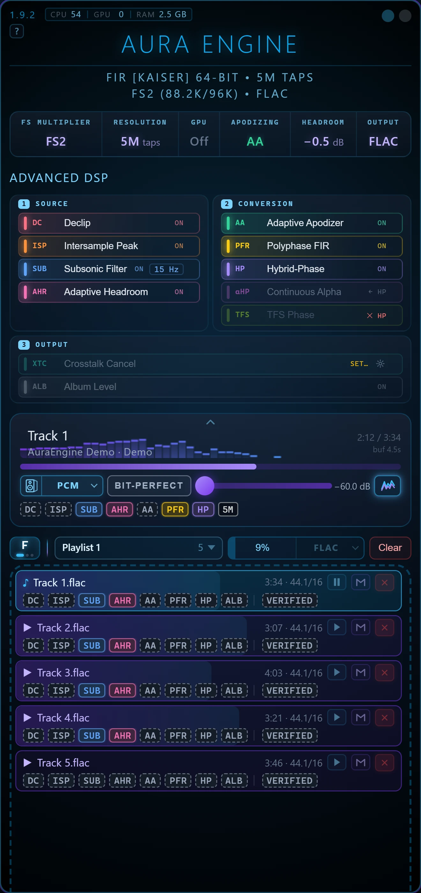
The app has a built-in tour: the round ? next to the version shows where everything is, one step at a time, with no files needed.
Updates
At start the app looks for a newer release and offers it. The download is checked against a signature over its version tag, file name and SHA-256 before anything is written, then the app restarts into the new version; your settings are kept. It will not update while a conversion is running. Windows has updated itself since 1.5.0; Linux and macOS (AppImage, .deb and .dmg) since 1.9.2 — from 1.9.0 or 1.9.1 there, install the current version by hand once.
Only one copy runs at a time: a second launch brings the open window to the front, because the player needs the output device to itself.
Converter
The top of the window holds everything that shapes the sound, in two parts: the settings strip (six cells) and the Advanced DSP rack under it. Both apply to playing and converting alike. Settings are remembered between runs. The signal path section shows the order the stages run in.
Under the window title, the specs line sums up the current chain, for example
FIR [Kaiser] 64-bit • 30M Taps and FS8 (352.8k/384k) • FLAC.
The settings strip
Click a cell to open its control under the strip; click it again, press Esc or click elsewhere to close it. GPU switches at once. A cell turns amber when the filter the setting needs is not on this computer yet (see Downloads inside the app).
FS Multiplier
FS2 · FS4 · FS8 · FS16 · FS32 — recommended: the highest rate your DAC accepts
The output rate is the source's family base times the multiplier: 44.1 kHz sources go to
88.2 / 176.4 / 352.8 / 705.6 / 1411.2 kHz, 48 kHz sources to 96 / 192 / 384 / 768 / 1536 kHz. The rate under the slider
shows both. A hi-res source keeps what it holds above the CD band: a 96 kHz file at FS8 is upsampled ×4, with the
filter made for ×4. Sources already at or above the target are skipped (SKIP).
FS32 is for the player and for DSD files. A FLAC header stores the rate in 20 bits, at most 1,048,575 Hz, so the highest FLAC output is FS16 (705.6 / 768 kHz); with FLAC output, FS32 shows a note and the converter refuses it.
Resolution
5k · 1M · 5M · 10M · 30M · 100M · 180M · 300M · 500M · 1G — 30M is marked optimal
The length of the main filter, counted at the output rate. More taps make the wall at the cutoff steeper and take longer to prepare; the stop band is deepest at 30M (about −220 dB), and longer filters only make the cutoff steeper. The rungs from 100M up are experimental, offered from FS4 (100M–300M) or FS8 (500M, 1G) and only ever chosen by you. A dimmed, struck-through mark means that size is not on this computer yet. Details: the ladder.
A fresh install opens on a filter that came with it — 1M with the Lite bundle. Custom Filter (.npy) below the slider loads your own coefficients; Clear goes back to the built-in set. A custom filter cannot be combined with Hybrid-Phase.
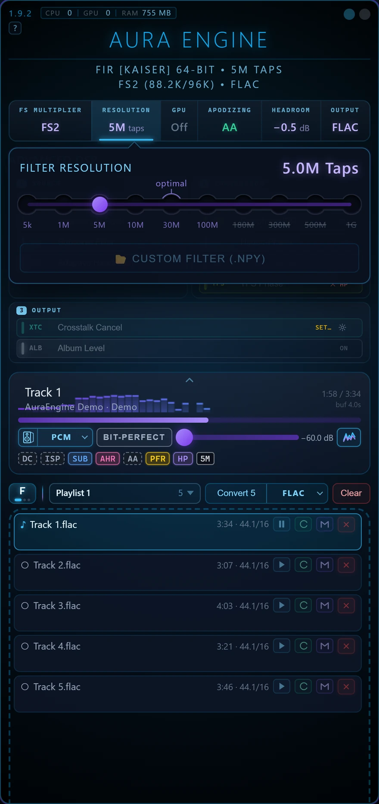
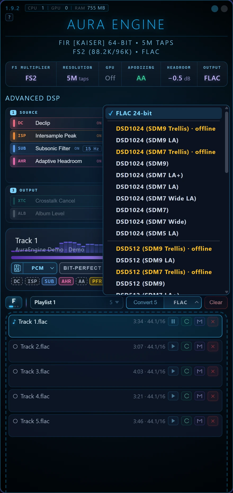
GPU
On · Off — default on; shows CPU in red when no usable card was found
Lets the filter run on a Vulkan graphics card with the same result as the CPU, to far below audibility. For converting, the card runs the long filter — the first stage of the multistage route, or the whole filter on the single-stage one. For playing, the player uses a discrete card only when the processor has too little margin for the chosen filter. Without a card everything runs on the CPU, which is the reference. How the precision is kept: the graphics card.
Apodizing
Off · Gentle (20 kHz) · Moderate (19 kHz) · Strong (18 kHz) — shows AA while the Adaptive Apodizer is on
A fixed minimum-phase low-pass that suppresses the pre-ringing a CD-era mastering converter left in the recording, for 44.1/48 kHz sources only. While the Adaptive Apodizer is on (the default), this control is locked: AA measures each file and sets the cutoff itself. Switch AA off in Advanced DSP to choose a preset here.
Headroom
Off · −0.5 dB · −1.0 dB · −3.0 dB — default −0.5 dB
The ceiling for the output's true peak. A file whose reconstructed peaks would come out above it is turned down, as a whole, until the loudest one sits there — or, with Intersample Peak Correction on, only those peaks are held, when they are few and within 6 dB. Quieter files are passed through untouched; nothing is ever raised. Off keeps the shipped −0.5 dBTP. It is a ceiling, not a gain: nothing is scaled before the filter.
Output
FLAC (24-bit) · DSF (DSD64 · DSD128 · DSD256 · DSD512 · DSD1024) — default FLAC
What the converter writes. FLAC is 24-bit, written natively and verified. DSF turns the chain's output into one-bit DSD with a sigma-delta modulator of your choice (SDM5, SDM7 or SDM9, best first — LA looks ahead and is heavier, Wide keeps the ultrasonic noise lower). The converter also offers the slow Trellis modulators, marked offline: far slower than real time, a track may take minutes. For DSD the chain runs at the DSD rate ÷ 8 at most — DSD64 at FS8 — or at your FS setting if that is lower. The same choice is on the arrow of the Convert button. More on DSD: DSD output and doc 20.
Advanced DSP
The rack is three zones, with the stages in the order the chain runs them: 1 Source (runs on the source, before the filter sees it), 2 Conversion (the filter itself and the phase it is rendered in) and 3 Output (runs on the finished render). Click a stage to switch it; right-click for Enable/Disable and Only this one. Hover shows what it does.
All stages ship on except Hybrid-Phase, Continuous Alpha and Crosstalk Cancel. The state column explains itself:
ON, SET… (needs setting up), ✕ TFS (blocked by a conflicting stage),
← HP (needs another stage), or a cost such as 2×. The rack is locked while a batch runs.
The same short tags appear as badges under each file and under the player: lit when the stage ran and changed the audio, dim when it ran and decided there was nothing to do, and waiting while its turn has not come. The converted file's name lists the stages that actually fired, in order.
Declip DC
Source · default on
A master pushed into the rail comes back with its peaks flattened. The flat top says nothing about how high the wave was going; the flanks on either side do. Declip finds those runs and rebuilds the arc across them by constrained autoregressive interpolation, with the rail treated as a lower bound. It refuses far more often than it fires: a run shorter than 17 samples is a limiter working, not a clipper, and the stage stands down. MP3, AAC, Vorbis and Opus sources are left as decoded, because their samples above full scale are the codec's. Rebuilt peaks are then taken down by the output ceiling, so a declipped file arrives quieter — match levels before comparing.
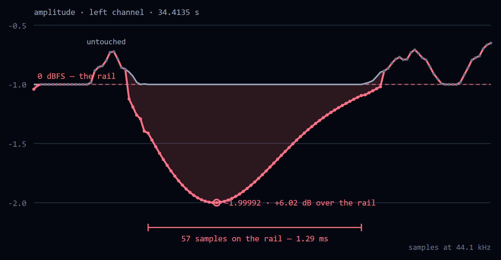
Intersample Peak Correction ISP
Source · default on
Between its samples, a reconstructed wave can rise higher than any sample, and above full scale — this is where a DAC or an encoder clips a file that never exceeds 0 dBFS. ISP scans at 4× with a Lanczos kernel and applies the smallest correction that clears the overs, leaving alone the spans Declip has just rebuilt. Its second half, at the end of the chain, is a limiter with ~1.5 ms dips that trims the overs the reconstruction itself makes, so a whole file does not come down for a few milliseconds of peaks.
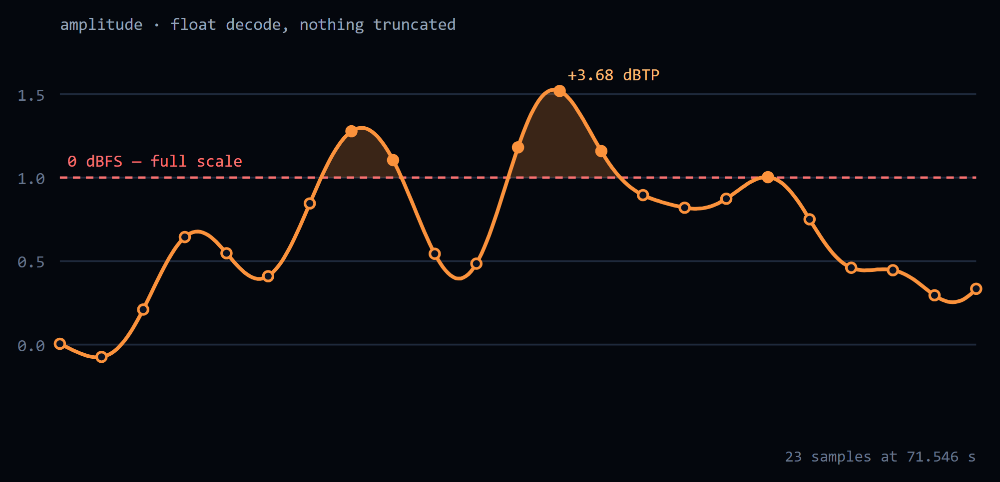
Subsonic Filter SUB
Source · default on, 15 Hz · corner 20 / 15 / 10 Hz (click the chip on the row)
A linear-phase FIR high-pass at the source rate: flat within 0.01 dB from the corner up and at least 100 dB down from half the corner to DC. Removing the DC offset takes out a constant and nothing else; a slow wobble or infrasound a disc carries goes straight through — this catches it. It is protection for speakers, not a sound improvement, and linear phase means nothing above the corner moves in level or time. It runs a second time on the finished render, after the output limiter, whose short dips would otherwise leave a shelf of infrasound. On a live stream its look-ahead is a short wait before the first sound.
Adaptive Headroom AHR
Source · default on · needs Headroom set to something other than Off
Decides whether to honour the Headroom setting on this file. It keeps the shipped −0.5 dBTP
when lowering the ceiling would cost level for nothing — the source peak already sits below the target, or the
effective bit depth says it is a clean high-resolution master — and otherwise lowers it as asked. With Headroom on Off
there is nothing to decide, and the row shows ← Headroom.
Adaptive Apodizer AA
Conversion · default on · any source rate
Masters carry the fingerprints of every filter that touched them. The apodizer reads them per file: it finds the strongest attacks, looks for high-frequency energy rising before them — the mark of a linear-phase brick wall — measures the ring's exact frequency, and places a corrective minimum-phase low-pass just below it, deeper for a strong ring than a mild one. A spectral-cliff detector unmasks fake hi-res (a 44.1/48 kHz master inside an 88.2 kHz+ container is treated against its original Nyquist), and a mirror-image probe catches bad upstream resamplers. Clean and minimum-phase sources are diagnosed in the log and left untouched, and it stands down on a lossy file whose codec has already cut everything where its filter would go. Details: doc 14.
Polyphase FIR PFR
Conversion · default on · the player always runs it
The filter is the resampler: one exact convolution against the designed filter, no second resampler in the chain, output exactly L times the input, integer ratios only. From 5M taps it is multistage — the long filter runs once at the source rate and a short exact interpolator does the rest, for several times less work and the same sound (difference −204 to −220 dBFS). 1M, 5k, custom filters and ×3/×6 stay single-stage, and the rungs of 100M and up exist only this way. Off, the converter uses the standard path instead.
Hybrid-Phase HP
Conversion · default off · about 2× the time · cannot run together with TFS
Linear phase through sustained passages, minimum phase across attacks, switched at a zero crossing with a short fade, stereo-linked. It renders the track twice in full. Turning it on turns TFS off. How it works and its limits: Hybrid-Phase.
Continuous Alpha αHP
Conversion · default off · needs Hybrid-Phase (switching it on turns HP on)
Drops Hybrid-Phase's hard switch for a per-sample crossfade between the two renders, driven by the transient envelope.
TFS Phase TFS
Conversion · default on · replaces Hybrid-Phase
A different way to spend the phase: linear below 1.5 kHz, minimum above 4 kHz, blended between. The low end keeps the exact timing of a linear-phase filter; the treble has no pre-ringing ahead of a transient. The magnitude matches the linear-phase render to ±0.000003 dB over 20 Hz–20 kHz — only the phase differs, so an ordinary sweep cannot see it. It needs both phase files of your filter size; it is derived from them on first use and cached (at 30M taps about 12 s and 4.5 GB of memory, once). With both TFS and Hybrid-Phase off, the filter is plain linear phase.
Crosstalk Cancel XTC
Output · default off · shows SET… until the listening geometry is entered
Over speakers, each ear hears both. XTC cancels what each speaker sends to the wrong ear, so the stereo image is no longer bounded by the speakers. It is built from the listening triangle you measure with a tape (the gear icon, Listening geometry…), and is correct only for that seat: about 20 mm of head movement costs half the cancellation. This is the one stage that deliberately colours the signal. Speakers only, never headphones.
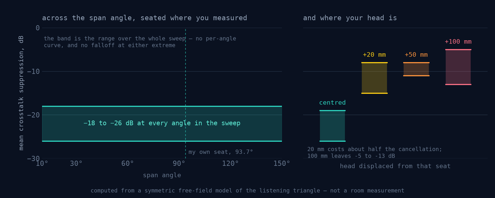
Album Level ALB
Output · default on · conversion only
The true-peak ceiling is one gain per file, and how deep it cuts depends on that file — converted one by one, an album's tracks could change their balance. Queued files that share a folder and an Album tag are converted as one album: every track is prepared first, and all take the deepest cut any of them needs. On a 12-track album the level spread against the CD went from 6.15 dB to 0.02 dB. The price: the album comes out as quiet as its most demanding track needs, and nothing is written until all are prepared. A file without the tag, or an album's only queued track, converts as before. The player plays each track at its own level.
Converting files
Each row of the list has four buttons:
| Button | What it does |
|---|---|
| ▶ | Plays the track through the rack as it is set. Green: a converted file matching the current rack exists, and it plays from disk. |
| C | Converts this track with the rack as it is now. Hidden when the track is already converted with the current rack. |
| M | Track memory: this track keeps its own rack. While on, rack changes go into this track and come back when it plays or converts. |
| ✕ | Takes the track off the list (and cancels its conversion). |
Convert N above the list converts every file not yet converted with the current rack (or with its own, if the track keeps one); its arrow picks FLAC or a DSF rate and modulator. While it runs it shows the percentage — hold it for 2 seconds to cancel. Several files convert at once, and a batch can run while the player plays. Clear empties the list; running conversions stay. Rows can be dragged to change the order, and the playlist name switches between several lists, adds and renames them.
Each finished row shows ✓, how many times faster than real time it converted, and its badges, ending with
VERIFIED once the written file has been decoded back and matched the render sample for sample.
BAD marks a non-standard sample rate (only the 44.1 and 48 kHz families are supported), SKIP
a file with nothing to upsample. Dim badges mean the file was converted with different settings — press C to convert
it again with the current rack.
The converted file goes next to the source, named after it with the chain in brackets, for example
Track [AE · 44.1k→352.8k · Kaiser 30M · f64 · DC·ISP·SUB15·AA·PFR·TFS].flac. A source with more than two
channels is narrowed to its front pair, and the name says so. Each file is stamped with the version and chain that made
it; after an update that changes the sound of a setting, older renders show as not converted, the source plays
meanwhile, and the old file is kept.
Player
Every row of the list has ▶ beside C. Both run one engine and one chain — the same filters, phase engine, rack and output stages, from the same code. The converter has no deadline; the player prepares ahead what a track needs whole and switches each stage in as soon as it is ready. Once every stage is in, what it sends to the device matches the converted file to −120 dB (measured on 30M taps, FS8, TFS, XTC).
| Converter | Player — a file | Player — a stream | |
|---|---|---|---|
| Chain | The whole rack, every stage at full length | The same rack; whole-track stages prepared ahead | The same rack as the stream arrives |
| Whole-track stages | All, before anything is written | All — switched in as they get ready | Declip and the Adaptive Apodizer stand down |
| Album Level | One level per album | Each track at its own level | — |
| Output | 24-bit FLAC, or DSF DSD64–DSD1024 | Exclusive output at the output rate, DSD64–256 over DoP, or BIT-PERFECT | The same |
| Best for | Music to keep and play anywhere | Hearing a setting first; listening at once | Internet radio |
Why convert, when the player matches it? Any filter on any machine, one level for a whole album, a file that plays anywhere without a PC, and nothing to keep up with while you listen. Why play? To hear a setting before an evening goes into converting, to listen at once without disk space for hi-res copies — and radio, which cannot be converted.
The player bar
Previous, Play/Pause (Space), Stop, Next and Repeat (off · whole list · one track), the seek bar, and the device row: the output device, the format button (PCM, or a DSD rate — see DSD output), BIT-PERFECT, the volume (−60 to 0 dB) and the Analyzer button with a small LUFS / LRA / true-peak readout. Under it, the stage badges: a lit badge changes the sound, a dim one does not, and a thin bar under them shows a stage being switched in or out.
Listening mode folds the settings away and leaves the player and the picture; the sound does not change. Click the thin strip on the player's top edge, press L, or right-click the player. It has full screen (Esc leaves it), spectrum bars and the scenes, and it is remembered.
The right-click menu of the player also holds Picture delay and Instant start. The
faint CPU · GPU · RAM badge beside the version shows the app's own load and memory; a click opens the
last hour of it.
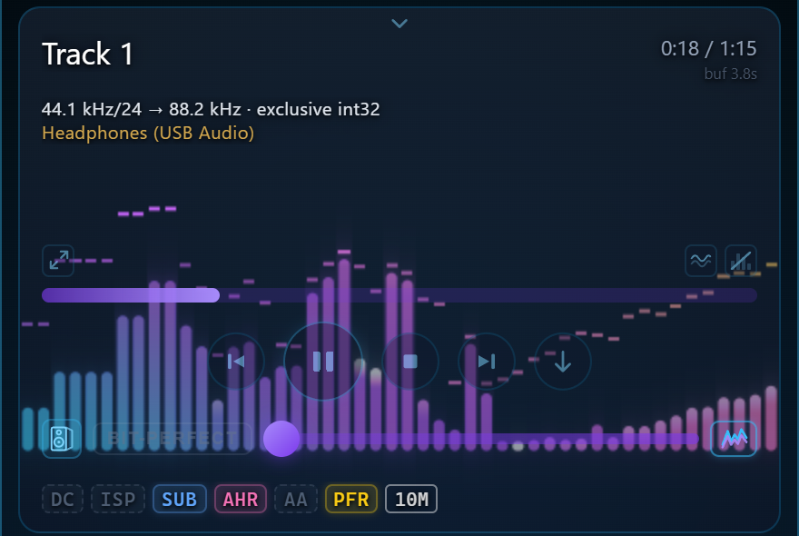
When each stage is in the sound
Some stages need the whole track before they can decide. With Instant start (on by default) the sound starts at once: Declip, ISP, the subsonic filter and Adaptive Headroom run over the track as it is decoded, ahead of what you hear, and the level follows the loudest moments a few seconds ahead until the whole output is measured. The badges light as stages come into the sound.
With Instant start off, nothing plays until every stage is ready — on an i9-14900K, a four-minute CD track at FS2 in about 1.7 s with 1M taps and 2.1 s with 30M on the graphics card. The whole-track analysis is kept on disk and the list is analysed ahead, so a track that was played or analysed before starts faster.
Nothing cuts the sound
- Seek: the old place keeps playing until the new one is ready; the sound then fades out and back in over about 250 ms, with no click. Pause, Stop and a rack change fade the same way.
- Next track: prepared while this one plays (with 2 GB of memory free) and follows it without a gap; a change of rate family costs only the device reopening, about 0.6 s.
- Rack change: the new chain is built while the old one plays and comes in with the same short fade, 1.5 s after the last click.
The output and BIT-PERFECT
The device is opened exclusively at the output rate, so nothing else mixes into it and nothing resamples it:
| System | Output |
|---|---|
| Windows | WASAPI exclusive mode |
| Linux | ALSA, straight to the card's hw: device (no dmix, no plug); your user must be in the audio group |
| macOS | CoreAudio in exclusive (hog) mode; the device is given back as it was when playback stops |
The DAC must accept the rate: FS8 is 352.8 / 384 kHz, FS32 is 1411.2 / 1536 kHz. If the device refuses it, choose a lower FS Multiplier. A 16-bit device gets dither and noise shaping on its own grid. What reaches the device is checked after the volume control: a block more than 12 dB louder than the volume allows becomes silence.
BIT-PERFECT sends the file as decoded — its own rate and depth, no rack, no volume, no dither — and switches while a track plays. A DSF or DFF file goes out as it is, over DoP at its own rate. The format button is shut while BIT-PERFECT is on.
The graphics card, when the CPU cannot keep up
The player measures, on your machine and for the chosen filter, whether the CPU convolves in real time with room to spare, and uses a discrete graphics card only when it does not. That is rare: a 30M filter at ×4 takes about a quarter of one core. On the card, 30M at ×8 takes about 170 MiB of video memory and matches the CPU to below −280 dBFS. If neither keeps up, the tap count steps down once for that track, and the taps chip says so.
DSD output
Open the format button beside the device and choose DSD64, DSD128 or DSD256. The chain runs as for PCM up to the DoP carrier rate (176.4, 352.8 or 705.6 kHz; the FS setting is set aside), and a sigma-delta modulator turns it into DSD, sent as DoP — DSD packed into 24-bit PCM — through the exclusive output. The volume still works. Your DAC must accept DoP at that rate.
The list is ordered best first and opens on the best modulator this PC can run; leave it there unless the machine is busy. One marked · high CPU runs but takes a large share of a core; one marked · too heavy for this PC is greyed out. If the PC falls behind while playing, the player steps down to a lighter modulator and says so. Re-check this PC… measures again. Noise plus distortion in the 20 kHz band for a −6 dB tone:
| Modulator | DSD64 | DSD128 |
|---|---|---|
| SDM7 LA+ (look-ahead, deeper) | −158.8 dB | −180.2 dB |
| SDM7 LA (look-ahead) | −151.1 dB | −172.7 dB |
| SDM7 | −138.9 dB | −160 dB |
| SDM5 | −121 dB | −138 dB |
As rough guidance, SDM7 LA at DSD64 takes about a tenth of one core per channel. DSF and DFF files play through the chain like any other file. Limits: DoP only — no native DSD, no ASIO output; the player goes up to DSD256 (DSD512 and faster files play as PCM). The converter writes DSF from DSD64 to DSD1024, including the slow Trellis modulators the player cannot run (see Output).
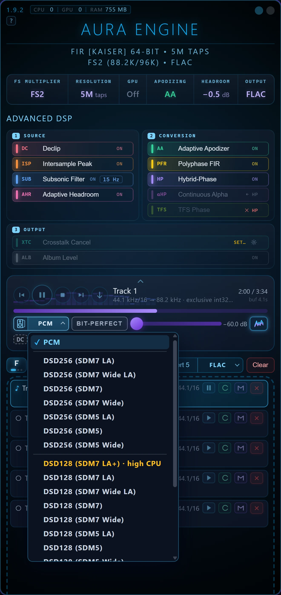
Internet radio
The narrow button first in the list head switches the list between Files, Radio and Input (click: next; right-click or Shift+click: previous). The radio has four tabs: Featured, Favorites, Recent and Search — the Radio Browser catalog, tens of thousands of stations by name, genre, country, language and format, which can be filtered down to lossless. You can also paste any stream's address.
MP3, AAC, HE-AAC, FLAC, Vorbis and Opus over HTTP, .pls / .m3u playlists and HLS are decoded inside the program, at 44.1 or 48 kHz and their multiples. On a stream the bar has only ▶ and ■. The rack runs on a stream with these differences:
| Stage | On a file | On a live stream |
|---|---|---|
| DC removal | Per-channel mean | The 2 Hz high-pass |
| Declip · Adaptive Apodizer | Run | Stand down — they need the whole track |
| ISP · Subsonic · XTC | Run | Run as the stream arrives |
| Adaptive Headroom | Decides on the whole track | Decides on the first 10 s |
| Linear phase | The full filter (42.5 s ahead at 30M ×8) | Its stream version, 50 ms ahead |
| TFS · Hybrid-Phase · Continuous Alpha | Run | Run from the first sound |
Long filters do not make a stream wait. A linear-phase filter looks ahead by half its length — 42 s at 30M and FS8, more than any broadcast can give. A stream plays a version of the same filter with the same magnitude and stop band, linear phase up to 20 kHz and minimum phase only in the last kilohertz under the wall. It looks 50 ms ahead and differs from the full filter by less than −200 dBFS in the audio band on music.
A dropout without a seam. When the connection drops, the player reconnects, finds where the new connection repeats what it already has and skips the repeat. The buffer starts at 8 s and grows when the network empties it. The drift between the server's clock and the DAC's is held within a second by dropping or repeating a few milliseconds in a quiet place — nothing is resampled. BIT-PERFECT works on a stream too.
Upsampling cannot add what the codec removed: a 128 kbps MP3 stream stays a 128 kbps MP3, played through a better reconstruction filter. Stations that stream FLAC give the rack the most to work with.
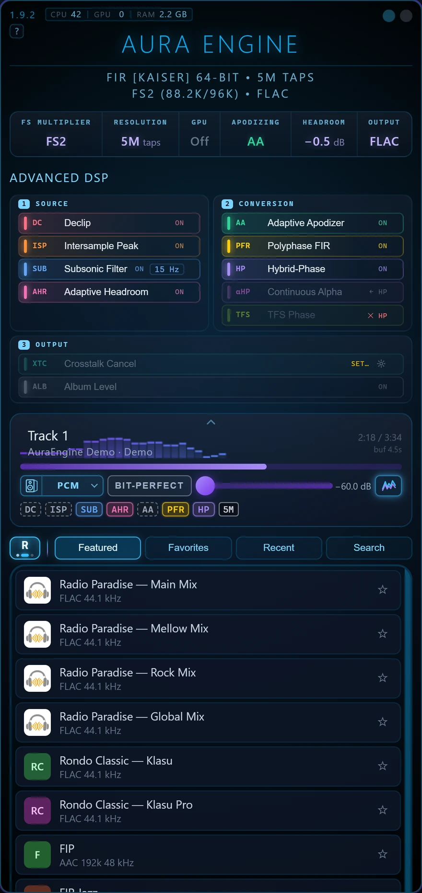
The analyzer
Ctrl+Shift+A or the Analyzer button opens a window on what you hear now; a row's right-click menu opens one on the file, or on its converted copy. It measures three signals side by side: S, the source; B, the source after the rack's repair stages, before the filter; and O, the output of the whole chain, from a pass over the entire track.
- Numbers: integrated, short-term and momentary loudness, LRA, true peak (BS.1770 and the engine's own 4× reading), DR, RMS, clipping runs and overs, DC offset, energy above and below the audio band — over the whole track, a selected stretch, or live.
- Views: spectrum, loudness history, spectrogram, the waveform down to single samples, a histogram, and a stereo view with a vectorscope and correlation. Each can compare S | O, O − S or B − S; in O − S, blue is where the chain made it quieter and red where louder.
- Spectrogram: a 4096-point FFT at 44.1 / 48 kHz, Kaiser window, 512 log bands from 5 Hz to Nyquist (below about 40 Hz from a 3 s window); Log, Lin, Mel and Bark scales.
- Export: the numbers as text in the formats forums use for DR and true-peak reports, or as TSV; the loudness history as CSV; any view as PNG.
The whole-track passes run only while the analyzer is open, so playback without it costs no extra CPU. On a radio stream it measures live — for the song playing and for the whole session — and shows how far the stream's spectrum really reaches: an MP3 at 128 kbps ends near 16 kHz, a lossless stream reaches half its sample rate.
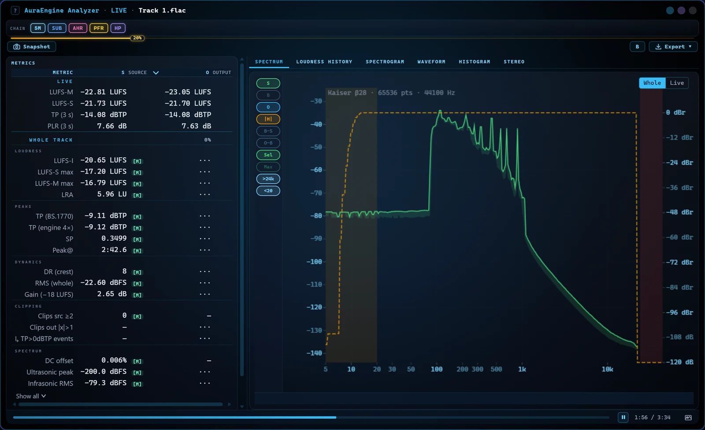
Scenes and picture delay
In listening mode the player can draw what it plays: right-click → Visualization picks a scene, or
Off. A scene is a GLSL shader in an .aura-vis file; 19 come with the app. The player renders a few seconds
ahead of what you hear, so a scene can see a kick coming and have it land as it sounds.
Studio… opens a window that edits scenes, tunes their settings with sliders and takes Shadertoy's
multipass shaders, keeping each one's author, link and licence; its Copy prompt for AI button puts
the whole scene format and your idea on the clipboard, to paste into an AI chat.
Stage, Lineup and Diamond Dust Stage draw each instrument on its own — the kit piece by piece, the bass, the voice, the guitars and the keys — using a 282 MB pack of models downloaded once and checked file by file. Each track is analysed once, in the background: 15–25 s for a four-minute track on an RTX 4090. On a radio stream they work on a graphics card, the instruments coming a few seconds after a station starts.
Picture delay (right-click the player), set per output device from −100 to +400 ms, holds the picture back by what a DAC's filter or active speakers add and the system does not report. Eleven scenes are adaptations of Shadertoy work, each under its own licence (CC BY-NC-SA 3.0, CC BY 3.0 or CC0), credited in the studio.
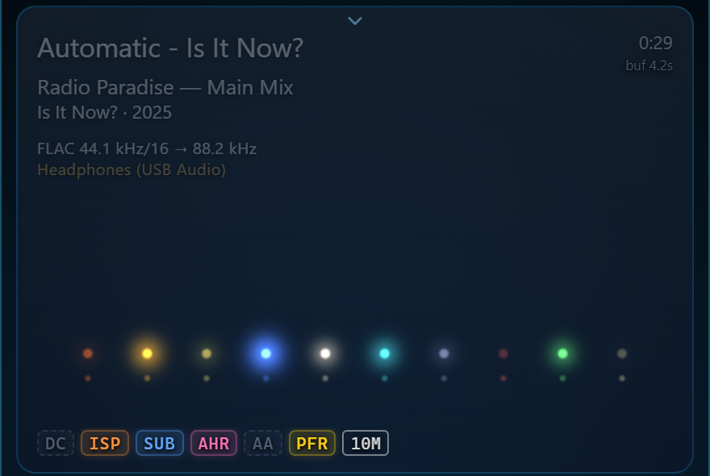
ASIO input WINDOWS
The third view of the list switch, I, is the input: Aura Player ASIO, a virtual ASIO device. Choose it as the output in foobar2000, JRiver, HQPlayer, Roon or any player that plays to an ASIO device, press play, and the music goes through Aura Player's rack to your DAC — at the output rate, or bit-perfect if BIT-PERFECT is on. The input needs Windows; on Linux and macOS the view is not offered.
Setting it up
- Switch the list to I and press Install driver. Windows asks for permission once. When a newer Aura Player brings a newer driver, the card shows Update driver.
- The card says Waiting for a player. In your player, choose the output Aura Player ASIO:
- foobar2000 (with its ASIO component): Preferences → Playback → Output → Device: ASIO: Aura Player ASIO
- JRiver: Options → Audio → Audio Device: Aura Player ASIO [ASIO]
- HQPlayer: Settings → Backend: ASIO → Device: Aura Player ASIO
- Roon: Settings → Audio → This PC: Aura Player ASIO → Enable
- Press play there. If Aura Player is not listening yet, press Listen on the card — or tick Switch to the input when a player starts playing to have it done for you.
While it plays, the card and the strip show the player's name, what comes in (for example 96 kHz · 32-bit) and what the rack plays it at. Remove driver uninstalls it.
Aura Player sets the pace
Two channels, 44.1 to 768 kHz, 64- and 32-bit players. The driver calls the player once a buffer's time by the system clock, trimmed at most 100 ppm a second to what the rack takes: nothing is cut or repeated. The sound leaves Aura Player about 2.3–2.6 s after the player (1.5 s without the Subsonic Filter), so a pause or a seek is heard that much later. On the input the bar has only ▶ and ■.
Spotify, or any Windows program
A program with no ASIO output of its own can reach the input through two programs from VB-Audio — Hi-Fi Cable and ASIO Bridge. They are third-party (donationware, Windows); AuraEngine does not include them, and how they behave is theirs.
- Install VB-Audio Hi-Fi Cable & ASIO Bridge: run the setup as administrator, then restart Windows.
- Install the driver in Aura Player's I view, if you have not.
- In Windows sound settings, or in the program, play to Hi-Fi Cable Input.
- In ASIO Bridge, choose Aura Player ASIO and press ASIO ON.
- Play. The view shows
VBCABLE_AsioBridge; press Listen if it does not switch by itself.
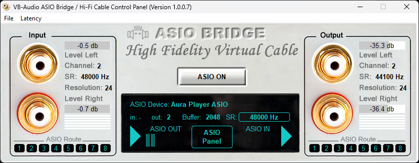
If the card reports a problem: permission not given — install again and allow it; couldn't install or couldn't download — check the connection and try again; the driver didn't match this version — press Update driver; couldn't open its input — restart the computer. The driver is GPL-3.0-only and the protocol between it and Aura Player MIT; the player stays under PolyForm Noncommercial.
Filters
Everything AuraEngine does rests on precomputed filter files: one per tap count, output rate and phase. They are the big part of the download — the full set, with the rungs above 30M, runs to tens of gigabytes — so you only keep the ones you use. The app never designs a filter while it runs; how the files are made is in Filter design.
Bundles (Windows)
On Windows the app comes in four ZIPs, each with its filters inside. The app opens on a filter that came with it, so there is no setup step.
| Bundle | What is inside | Size |
|---|---|---|
| Lite — start here | The app with 5k and 1M taps at every multiplier, FS2 to FS32 | ~0.17 GB |
| ×8 | 5k–30M taps at ×8 (352.8 / 384 kHz) and 5k–10M at ×4 | ~2.0 GB |
| ×16 | 5k–30M taps at ×16 (705.6 / 768 kHz) and 5k–10M at ×8 | ~2.0 GB |
| ×32 | 5k–30M taps at ×32 (1411.2 / 1536 kHz) and 5k–10M at ×16 | ~2.0 GB |
Pick the bundle for the output rate your DAC runs at. Every bundle carries both phase types (so Hybrid-Phase and TFS work) and both rate families (so 44.1 and 48 kHz sources convert alike). The app on its own, without filters, is on the releases page. On Linux and macOS there are no bundles: the app downloads what you choose.
Unzipping several bundles into one folder is fine and useful: the filter files merge, one copy of the app serves them all, and the tap slider offers every size you have — so you can render the same track at 5k and at 30M and hear for yourself what a tap count buys.
Downloads inside the app
When a setting needs a filter you do not have — another multiplier, a longer filter, one of the rungs above 30M — a
one-line bar above the filter rack names what is missing and how big it is, and a dialog fetches it from the public
filters release. Every file is checked by size and SHA-256 against a signed manifest, and a cancelled
download resumes where it stopped. On the tap slider, a struck-through mark means that size is not on this computer
yet; choosing it names the download that would add it.
The Storage tab
The download dialog has two tabs, Download and Storage. Storage shows the filters
folder, how much each rung takes (1G, 500M, 300M, 100M, “30M and less”), and the files not used by this
version, with a Move to Recycle Bin button. Nothing is deleted until you press it, and the
files can be brought back from the Recycle Bin (the Trash on macOS and Linux, whatever the button says).
Open folder shows the filters folder: filters inside the app's data folder —
%LOCALAPPDATA%\AuraEngine on Windows, ~/Library/Application Support/AuraEngine on macOS,
~/.local/share/AuraEngine on Linux. The dialog opens from the bar above the rack, which appears while a
setting needs a filter that is not here; the Storage button also appears when a download finds too little free
space.
In the download dialog itself, For sources picks which rate families to fetch: the 44.1k family (CD and most music files), the 48k family (video, DVD, some streams) and hi-res sources (88.2k/96k and up — only if you play hi-res files). The dialog shows the total size and the free space before anything starts; Hide keeps the download going while the bar above the rack shows its progress.
The ladder: 5k to 1G taps
Ten sizes, counted at the output rate: 5k · 1M · 5M · 10M · 30M · 100M · 180M · 300M · 500M · 1G. Length is a setting, not a quality tier. On music a 5k and a 30M render agree below 20 kHz; what more taps change is how steep the wall at the cutoff is. The stop band gets deeper up to 30M — which already sits at the floor of double-precision arithmetic, so the slider marks it optimal — and past 30M the extra taps only make the wall steeper.
| Size | Offered at | Worst stop band 44.1 kHz ×8, linear | Kernel at ×8 352.8 kHz | Comes with |
|---|---|---|---|---|
| 5k | FS2–FS32 | −193 … −220 dB | 14.2 ms | Lite bundle |
| 1M | FS2–FS32 | −191 dB | 2.83 s | Lite bundle |
| 5M | FS2–FS32 | −205 dB | 14.2 s | download |
| 10M | FS2–FS32 | −211 dB | 28.3 s | ×8 / ×16 / ×32 bundles |
| 30M | FS2–FS32 | −220.9 dB (optimal) | 1.42 min | ×8 / ×16 / ×32 bundles |
| 100M | FS4–FS32 | −216 dB | 4.72 min | download |
| 180M | FS4–FS32 | −211 dB | 8.50 min | download |
| 300M | FS4–FS32 | −207 dB | 14.2 min | download |
| 500M | FS8–FS32 | — | 23.6 min | download |
| 1G | FS8–FS32 | — | 47.2 min | download |
A tap count is defined at the output rate: the 30M filter for 44.1 kHz ×8 runs at 352.8 kHz, so its kernel is 85 s long, and 99.76 % of its energy lies within ±1 ms of the centre (the arithmetic). The rungs from 100M up are stored as the one sub-filter the multistage path runs, L times smaller than the whole filter, so they play and convert only through multistage upsampling; minimum phase is available for them too. The app never moves to them by itself.
Installing filters by hand
The app downloads what it needs on its own, but the packs are also on the
filters release for offline machines. On
Windows, extract a pack beside aura-engine.exe (its files go into fir-optimizer/output/); the
app finds it and the slider mark stops being struck through.
The ×32 packs add the 1411.2 / 1536 kHz rates for one tap size, both phases:
| Pack | Size |
|---|---|
| aura-filters-5k-x32.zip | ~1 MB |
| aura-filters-1M-x32.zip | 0.03 GB |
| aura-filters-5M-x32.zip | 0.16 GB |
| aura-filters-10M-x32.zip | 0.32 GB |
| aura-filters-30M-x32.zip | 0.96 GB |
Each big-rung pack holds one rung at every multiplier it is offered at, for one rate family (44k: 44.1 kHz sources, 48k: 48 kHz) and one phase. Linear phase is what most people need; the minimum-phase pack only matters for minimum-phase, TFS and Hybrid-Phase use.
| Rung | Packs | Size each |
|---|---|---|
| 100M | 44k linear · 44k minimum · 48k linear · 48k minimum | 0.38 GB |
| 180M | 44k linear · 44k minimum · 48k linear · 48k minimum | 0.68 GB |
| 300M | 44k linear · 44k minimum · 48k linear · 48k minimum | 1.13 GB |
| 500M | 44k linear · 44k minimum · 48k linear · 48k minimum | 0.88 GB |
| 1G | 44k linear · 44k minimum · 48k linear · 48k minimum | 1.75 GB |
Your own filter. The tap control also takes a custom filter: a 1-D float64 .npy
coefficient file used instead of the built-in set. It runs single-stage.
How it works
This part is for those who want to know exactly what happens to the samples. Nothing here is needed to use the app. Each claim links to the technical document in the repository that measures it.
Why such long filters
Every DAC upsamples: rebuilding an analog wave from 44,100 samples a second needs an interpolation filter. A DAC chip does it in real time with a few hundred to a few thousand taps. AuraEngine lifts that limit: it reconstructs the signal with filters of 5 thousand to a billion taps, designed in 128-bit arithmetic and applied in 64-bit floating point end to end, and hands the DAC a signal at 88.2 kHz to 1.536 MHz that is already reconstructed — the DAC's own filter has almost nothing left to do.
Hybrid-Phase
Every FIR filter forces a trade. Linear phase keeps the stereo image coherent but rings before every attack; minimum phase hits cleanly but shifts timing between frequencies. Fixed “intermediate phase” filters carry a little of both flaws all the time. Hybrid-Phase, made for this project, renders the track twice in full — linear and minimum phase — and switches between the two renders at each transient.
- Stereo-linked. One switch plan is computed from the mid signal and applied to both channels at the same sample, so the channels can never drift in phase against each other.
- Built to be inaudible. Switches happen only at zero crossings, through a 1 ms fade on a smooth curve, with a 20 ms hold against chatter. The two renders are aligned sample-exact by band-weighted group delay (200–6000 Hz) before blending.
- The detector. A native HPSS (harmonic/percussive separation) onset detector — STFT with time and frequency median masks, 8-band spectral flux, an adaptive gate and an envelope follower with look-ahead — switches to minimum phase one to two analysis frames (about 12–23 ms at 44.1 kHz) before each attack.
What it keys on, honestly: the start of a sound, not a measurement of where the filter would ring. On music the two coincide, because an attack is both a beginning and a broadband event. On synthetic signals they come apart — a steady square wave with steep edges triggers nothing, because nothing begins. So the exact name is “minimum phase on attacks”, and there is a known blind spot in the first ~24 ms of a file. Both are written up with numbers in doc 06. Continuous Alpha replaces the hard switch with a smooth per-sample blend.
Linear, minimum and TFS phase
The minimum-phase filters are derived by cepstral folding with FFTs zero-padded at least 16 times (no time-aliasing), tail-faded with a Hann window and normalised back to unity DC gain. The impulse peaks at sample zero: mathematically no pre-ringing. TFS is a third way: linear phase below 1.5 kHz, minimum phase above 4 kHz, blended between, with a magnitude response that matches the linear one to ±0.000003 dB.
The signal path, in order
One file, start to finish. The whole CPU sample path is 64-bit floating point — there is no 32-bit truncation anywhere between decoding and dither. Stages you can switch are described in Advanced DSP; the rest always run.
- Decode. FLAC, WAV, MP3, OGG (Vorbis, Opus), AAC/M4A, DSF and DFF are decoded inside the program straight to 64-bit float — HE-AAC by the built-in FDK AAC decoder at its full rate. Integer PCM keeps every bit, and a lossy decoder's output is kept as it comes, including samples above full scale, which MP3 and AAC legitimately produce. Nothing is clipped on the way in. Encoder padding is trimmed from gapless metadata.
- DC removal — always on: the per-channel mean is taken out (a live stream uses a 2 Hz high-pass instead). A fraction of a millivolt of offset would otherwise make a 30M-tap filter ring at infrasonic frequencies and spoil the true-peak reading.
- Declip — rebuilds flattened peaks.
- Intersample peak correction — clears overs between the samples.
- Subsonic filter — linear-phase high-pass at 10–20 Hz.
- Adaptive Apodizer or a static apodizing preset.
- Upsampling — the long FIR filter, polyphase and multistage, with the phase chosen by TFS, Hybrid-Phase or plain linear phase.
- Crosstalk cancellation, when set up.
- Output limiter — the second half of ISP, with ~1.5 ms dips, then a second subsonic pass at the output rate so those dips cannot leave infrasound behind.
- True-peak ceiling — a 4× oversampled scan (8-tap Lanczos); if the reconstructed wave would exceed the Headroom ceiling, one gain brings the whole file under it (with Album level, the album's shared gain). A quieter file is left bit-exact.
- Dither and noise shaping — 24-bit TPDF dither from two independent random streams, one per channel. Up to 48 kHz a 9th-order Wannamaker shaper moves the noise where hearing is least sensitive; from 88.2 to 1536 kHz each rate has a minimum-phase shaper of its own (up to order 16), which lowers the noise in 0–20 kHz by 13–15 dB at ×2, 31–35 at ×4, 57–59 at ×8, 61–62 at ×16 and 63–64 at ×32.
- Encode — 24-bit FLAC, written natively in the program while it renders (a 90-minute file needs no more memory than a three-minute one), or a DSF from a sigma-delta modulator.
- Verification — the written file is decoded back and compared with the render. See Verification.
Every filter is normalised to exactly unity DC gain, so nothing is louder or quieter by design. Only two things ever change level: the true-peak ceiling (one gain per file, or per album) and the output limiter's millisecond dips. Nothing ever raises a quiet file. Stage-by-stage measurements: doc 18 and doc 05.
Two upsampling paths
Both share every preparation and output stage; the difference is what does the rate conversion. The polyphase path is the default (PFR).
| Polyphase FIR (default) | Standard | |
|---|---|---|
| Resampler | The long FIR itself, split into L sub-filters at the source rate | Rubato 512-tap sinc, then the FIR as a post-filter at the output rate |
| Ratios | Integer only; non-integer targets snap down (44.1 kHz × FS8 → 352.8 kHz) | Any |
| Output length | Exactly input × L | ~0.4 s of resampler padding |
| Compute | From 5M taps: multistage — one convolution at the source rate plus a short exact interpolator (≥210 dB). 1M, 5k, custom filters and ×3/×6: single-stage | One big convolution at the output rate |
| TFS | Runs | Stands down, and the row says so |
| Missing filter file | Error — never a silent downgrade | Post-filter skipped, logged |
Multistage (the default since 1.7.0): only the sub-filter that lands on the source's own samples runs — once, at the source rate — and a short linear-phase interpolator, designed to 218 dB with a stop band of at least 210 dB, does the rest. The long filter still decides the wall, the phase and the ringing; the work per output sample falls several times. Against single-stage the difference is −204 to −220 dBFS, about 66 dB below the last bit of a 24-bit file (doc 21).
The graphics card, without precision loss
A graphics card is never required: the CPU path plays and converts everything by itself, and it is the reference. When a card is there, it can take the convolution. The usual objection to GPU audio is that consumer cards compute in 32-bit float, a noise floor near −150 dB that a 30M-tap convolution would amplify. AuraEngine uses double-single arithmetic instead: every value is a pair of 32-bit floats, a high word and an error word, for about 48 bits of mantissa.
That only works if the shader compiler leaves the correction terms alone, so the compute shaders are written in GLSL
with the precise qualifier, compiled to SPIR-V with NoContraction decorations (which Vulkan
drivers must honour) and loaded through SPIR-V passthrough, so no translator touches the arithmetic. The result nulls
against the 64-bit CPU path at about −260 dB, some 110 dB below the 24-bit floor.
- Requirement: Vulkan with SPIR-V passthrough. Other adapters (DX12-only, for example) fall back to the CPU automatically, and so does a card that runs out of memory part-way — per phase on the polyphase path.
- Converter: with multistage only the long first stage goes to the card; 30M ×8 needs about 170 MiB of video memory. The card matters most for hi-res sources (176.4/192 kHz) and Hybrid-Phase pairs on a weak CPU.
- Player: uses a discrete card only when the CPU cannot run the chosen filter in real time with room to spare, matches the CPU to below −280 dBFS, and hands back to the CPU without a gap if the card fails mid-track.
Filter design
Filters are designed offline by fir-optimizer, a Python suite that builds each Kaiser-windowed sinc
prototype (β = 14 from 1M taps up, fitted to the length at 5k) in 128-bit arithmetic (mpmath, 38 significant digits),
normalises the DC gain with extended-precision summation, and ships the result as 64-bit .npy files with
a JSON sidecar. There is one filter per ratio, never rescaled: passband up to source Nyquist − 2 kHz, stop band from
source Nyquist, so the program never stretches a filter to a rate it was not made for.
The 30M filter measures a stop band of −220.9 dB or deeper, passband ripple of ±0.09 nano-dB, a unity-gain error of 1.1×10⁻¹⁵ and a transition 0.05 Hz wide. The log names the exact file used for each conversion.
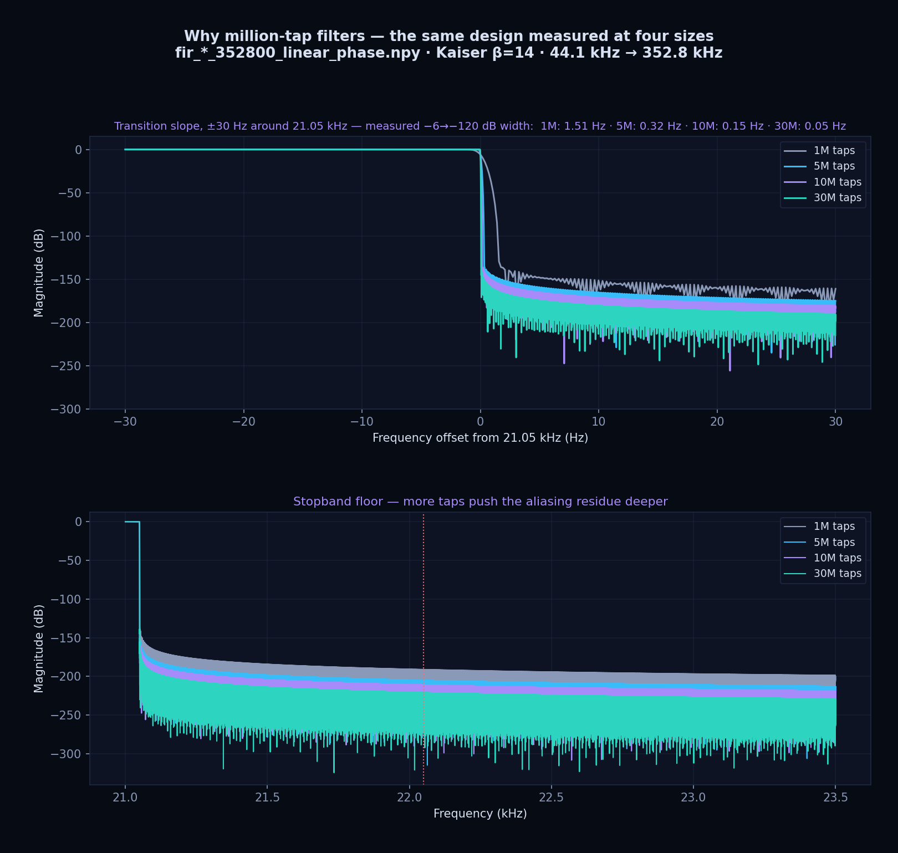
The laws of the DSP core
From DSP_MANIFESTO.md — the rules every change to the code is checked against.
| § | Law | Meaning |
|---|---|---|
| 1.1 | Unity DC gain | No filter may change loudness: sum(h) == 1.0, tested for every filter mode. |
| 1.2 | Headroom is a ceiling | Headroom names the output ceiling in dBTP, enforced at the end. Nothing is scaled before the filter. |
| 1.3 | True peak at the very end | The intersample scan sits right before quantisation, after every processing stage. |
| 2.1 | No time-aliasing | Minimum-phase conversion uses FFTs zero-padded ≥16×, so tails never wrap around. |
| 3.1 | Zero pre-ringing | Minimum-phase impulses peak at sample 0 with zeros before it. |
| 3.2 | Stop band ≥ 140 dB down | Measured −185 to −221 dB across the set, −193 to −220 dB at 5k. |
| 4.1 | 64-bit end to end | Any 32-bit truncation in the sample path is a blocking bug; the GPU's double-single arithmetic exists for this law. |
| 4.2 | FFT convolution only | Partitioned overlap-add/save, block sizes tuned to cache and video memory. |
Verification and the audit trail
- Every file. Each FLAC written is decoded back and compared sample by sample with the internal
64-bit render, within ±2 LSB at 24-bit. Only then does the row show VERIFIED; a file that fails is
renamed
_UNVERIFIEDand flagged. (705.6/768 kHz output exceeds what the FLAC format itself allows a decoder to read back; without ffmpeg installed, the log says verification could not run at that rate instead of calling a good file unverified.) - Every render is stamped. The file records the version and the chain that made it, so the app can tell whether a converted file still matches the current settings and version; an older render is shown as not converted and the source plays meanwhile — the old file is kept.
- Every build. More than 900 unit tests pin the invariants — convolver latency, unity gain, bit-exact polyphase reconstruction, stereo-linked switching, true-peak and dither behaviour, and the player's streaming stages against the converter's whole-file code.
- The log. The console window next to the app prints the full DSP trace: which filter file
was used, the apodizer's verdicts, Hybrid-Phase coverage, true-peak decisions, verification results. It starts
minimized; on Windows the same log goes to
%LOCALAPPDATA%\AuraEngine\logs. If you audit audio software, start there, then read the auditor's guide.
Performance and FAQ
A 30-million-tap filter runs on a CPU, without a graphics card. The long filter runs once, at the source rate, and a short linear-phase interpolator — designed to 218 dB, stop band at least 210 dB — takes the result the rest of the way to ×2…×32 (multistage). The long filter still decides the wall, the phase and the ringing; the work per output sample falls several times. Multistage applies from 5M taps up; 1M, 5k and custom filters stay single-stage.
Measured on an Intel Core i9-14900K. The four efficiency cores rows pin the process to four of its E-cores, as a stand-in for a modest laptop CPU — not a real laptop. Source: 44.1 kHz CD material; filter: 30M taps, linear phase.
Player: CPU per second of music
| ms of CPU per second of music | ×4 | ×8 | ×16 |
|---|---|---|---|
| Four efficiency cores — multistage | 50 | 27 | 23 |
| Four efficiency cores — single-stage | ~160 | ~160 | ~160 |
| All cores — multistage | 11 | 6.9 | 4.7 |
| All cores — single-stage | 34 | 34 | 34 |
On four efficiency cores a 30M ×8 stream runs about 35 times faster than real time. In a real window, 30M ×4 takes about a quarter of one core.
Player: from the press to the first sound
| 30M, four-minute track, CPU only | ×4 | ×16 |
|---|---|---|
| Four efficiency cores — multistage | 1.51 s | 1.15 s |
| Four efficiency cores — single-stage | 1.86 s | 1.80 s |
| All cores — multistage | 0.40 s | 0.62 s |
| All cores — single-stage | 0.79 s | 0.77 s |
The time until the first 0.3 s of output is ready, with XTC and the subsonic filter on; opening the device not included; median of three.
Converter and accuracy
| A 3:43 track, 30M, all cores, CPU only | ×4 | ×8 | ×16 |
|---|---|---|---|
| Multistage, wall time | 13 s | 20 s | 33 s |
| Single-stage, wall time | 23 s | 29 s | 45 s |
| Multistage, times faster than real time | 17× | 11× | 6.8× |
| Multistage against single-stage, 30M ×8 | Difference (null) |
|---|---|
| Linear phase | −212 … −220 dBFS |
| Minimum phase | −212 … −219 dBFS |
| TFS | −204 … −210.5 dBFS |
| Hybrid-Phase | −219.8 dBFS |
The last bit of a 24-bit file is at −144 dBFS; the difference sits about 66 dB below it. Not bit-identical — rounded to 24 bits, one sample in 20 000 to 90 000 differs by one LSB — but the wall (−6 dB at 21 050.01 Hz), the phase, the ringing and the delay are unchanged, and in a blind A/B the listener could not tell the two apart.
Frequently asked questions
- Do I need a powerful PC or a graphics card?
- No. Pinned to four efficiency cores of an i9-14900K, the player runs a 30M filter at ×8 on 27 ms of CPU per second of music, with no graphics card. Any filter also converts on any machine; a long one just takes longer.
- Do I have to wait for the conversion before I can listen?
- No. ▶ plays the source through the same chain at once: the first sound of a 30M track is ready 1.2–1.5 s after the press on four efficiency cores (0.4–0.6 s on all cores), and the stages that need the whole track switch in as they get ready. Converting is for keeping a file, not for listening.
- Is multistage upsampling lossy?
- It is not bit-identical, but the difference to the single-stage output of the same 30M filter is −204 to −220 dBFS, about 66 dB below the last bit of a 24-bit file; the wall, the phase and the delay are unchanged.
- 30 million taps ÷ 48 kHz = 10 minutes. Is the filter really that long?
- No — a tap count here is counted at the output rate. The 30M filter for 44.1 kHz × 8 runs at 352.8 kHz, so its kernel is 85 s (39 s at 768 kHz), and 99.76 % of its energy lies within ±1 ms of the centre.
- Is a billion-tap filter better than 30M?
- Not by depth. The worst stop band (44.1 kHz × 8, linear phase) is −191 dB at 1M, −205 at 5M, −211 at 10M, −220.9 dB at 30M, then −216 dB at 100M, −211 at 180M and −207 at 300M: 30M already sits at the floor of double-precision arithmetic, which is why the slider marks it optimal. What 100M to 1G buy is a steeper wall at the cutoff, at the price of a download of up to 1.75 GB per pack and of time.
- Why will the converter not write FLAC at ×32?
- A FLAC header stores the sample rate in 20 bits — at most 1 048 575 Hz — and ×32 is 1411.2 or 1536 kHz. ×32 works for the player (if the device takes the rate) and for DSD256 and faster in the converter, where the result is a DSF.
- Do I need the GPU?
- No. The CPU path is the reference (f64, Kahan-compensated); the GPU path stays within about −260 dB of it. The card still helps most with hi-res sources (176.4 / 192 kHz) and Hybrid-Phase on a weak CPU. For playback it matters only when the CPU cannot run the chosen filter in real time — the player measures that and uses the card only then.
- Can I run two copies side by side?
- No. A second launch brings the open window forward: the player needs the output device to itself. Within one copy a batch converts several files at once.
- Why is there a console window next to the app on Windows?
- It is the audit log, on purpose: filter selection, Hybrid-Phase coverage, true-peak action, verification verdicts.
It starts minimized. The same log is written to the
logsfolder of the app's data folder —%LOCALAPPDATA%\AuraEngineon Windows,~/Library/Application Support/AuraEngineon macOS,~/.local/share/AuraEngineon Linux. - Does it need ffmpeg or any other external tool?
- No. Decoding and encoding are built in, and no other program is started during a conversion. The one exception is verifying 705.6 / 768 kHz FLAC: those rates exceed the FLAC specification's own 655 350 Hz limit, so only ffmpeg reads them back. Without it the log says plainly that verification could not run at that rate.
- Can it damage loudness or dynamics?
- No. The engine applies one gain to a whole file, in one place: the true-peak normaliser, when the reconstructed waveform would exceed the ceiling (−0.5 dBTP, or whatever Headroom names). With Album Level on, the tracks of one album share that gain. The only other is the ISP stage's limiter, which holds an over with a dip of about 1.5 ms. It never raises a quiet file.
- Which radio stations can it play?
- Any stream at 44.1 or 48 kHz (or a multiple) in MP3, AAC, HE-AAC, FLAC, Vorbis or Opus — over plain HTTP, a .pls or .m3u playlist, or HLS. Encrypted HLS does not play.
Troubleshooting
Nothing happens when I start it
Start it from a terminal as aura-engine.exe --selftest (on Windows): it prints what the program needs from
the machine and what it found, without opening a window. If the app crashed, it leaves
AuraEngine-crash.txt next to the program (or in the logs folder when that folder is not writable). Attach
both to an issue.
Windows says WebView2 is missing
The window is drawn by Microsoft Edge WebView2. Windows 11 has it; some Windows 10, LTSC and N editions do not. Install the WebView2 Runtime from Microsoft and start the app again — the app's own message links to it.
The DAC refuses the rate, or plays nothing
The device must accept the output rate (FS8 is 352.8 / 384 kHz). Choose a lower FS Multiplier. For DSD output, the DAC must accept DoP at the carrier rate (DSD64 is 176.4 kHz).
The device is busy
The player takes the device exclusively. Another program playing to it — a browser, a system sound, a second player — keeps it from opening. Stop that program, or choose another device.
Linux: no hw: device, or permission denied
Add yourself to the audio group — sudo usermod -aG audio $USER — then log out and in again.
The AppImage needs chmod +x once.
macOS: “damaged” or “can't be opened”
The app is not signed by Apple. Run xattr -cr "/Applications/Aura Engine.app" once in Terminal, then open
it again.
A setting is amber, or a filter is missing
The filter that setting needs is not on this computer yet. Use the bar's Download — see Downloads inside the app. If there is not enough disk space, the dialog offers Storage to remove filters you do not use.
GPU is on, but the log says CPU
When the card is missing, too small or fails, the engine falls back to the CPU and says so. The result is the same; the CPU path is the reference.
BAD, SKIP or no VERIFIED badge
BAD: a sample rate outside the 44.1 and 48 kHz families. SKIP: the source is already at or above
the target rate. A 705.6 / 768 kHz FLAC is verified only when ffmpeg is installed; without it the log says verification
could not run at that rate.
Web converter
The same engine runs in the browser on Hugging Face — the AuraEngine Space, also embedded on the home page under “Try it here”. Upload a file, pick the settings, download the result. Nothing to install.
| Web converter | Desktop app | |
|---|---|---|
| Rate | FS2 – FS16 | FS2 – FS32 |
| Filter | 5k – 30M taps (default 30M) | 5k – 1G taps, custom filters |
| Output | FLAC, or DSF DSD64 – DSD256 (real-time modulators) | FLAC, or DSF DSD64 – DSD1024 with every modulator |
| Rack | The desktop app's default chain | Every stage, track memory, Album Level |
| Player, radio, ASIO input, analyzer | — | Yes |
Use the web converter to hear what the engine does with one of your files before installing anything; use the desktop app for whole libraries, long filters and listening.
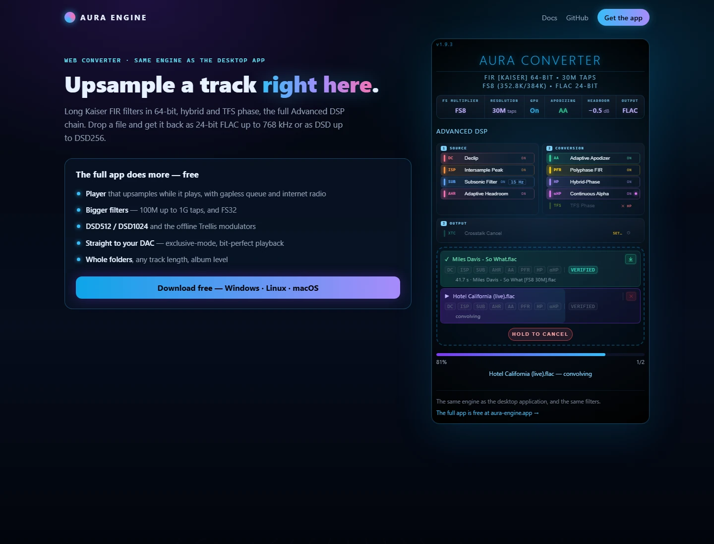